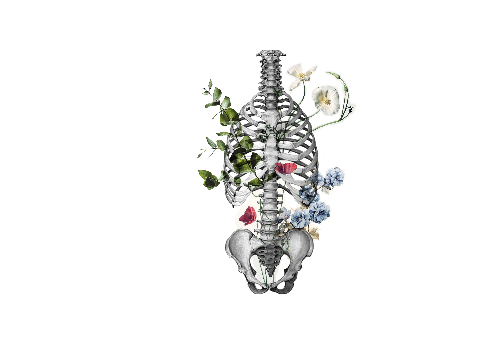

01 / Retícula
12 columnas
- Desktop
- 12 columnas · ≥ 801 px
- Móvil
- 4 columnas · ≤ 800 px
- Margen exterior
- 20–52 px
- Gutter
- 16–28 px
- Lectura
- máx. 42 caracteres
↔ margen exteriorgutter ↔área útil
01
02
03
04
05
06
07
08
09
10
11
12
025%50%75%100%
Foundations v1.0. Estas reglas son la referencia obligatoria para diseñar y construir las siguientes secciones.
Regla principal. No se introduce un tamaño, margen, color o comportamiento nuevo si no pertenece a este sistema o se documenta primero como una ampliación.
01 / Retícula
02 / Espaciado
Todos los márgenes, paddings y gaps parten de esta escala. Para bloques fluidos se usan únicamente los tokens definidos.
Libre Baskerville Bold · 62–106 px · 0.88 · −0.065 em
H1 y H2 narrativos que abren una sección principal. Máximo uno por sección.Libre Baskerville Bold · 40–72 px · 0.96
H2 estándar dentro de páginas y bloques secundarios.Libre Baskerville · 28–44 px · 1.05
H3, títulos de cards y módulos.Adrianna Extended Light · 16–20 px · 1.55
Introducciones y mensajes de valor. Máximo 42 caracteres por línea.Adrianna Extended Light · 16 px · 1.6
Párrafos. Body small: 14 px / 1.55 para notas secundarias.12 px UI / 10 px Micro · mayúsculas · tracking definido
Botones, navegación, etiquetas, numeración y metadatos. Nunca para párrafos.Reenie Beanie · 24/28 px
Solo anotaciones expresivas. Nunca navegación, botones ni información esencial.96–180 px verticales. Separación entre bloques internos: 56–96 px. El ritmo lo gobiernan los tokens, no valores aislados.
Botones y franjas se reutilizan con la misma estructura, padding y estados. Una variante nueva debe documentarse antes de aplicarse.
200 ms para feedback, 450 ms para componentes y 900 ms para entradas. Siempre se respeta “reducir movimiento”.
Dirección compartida. Orgánica, editorial, amable, calmada, sensible y sencilla. Las imágenes sirven para validar el lenguaje; la selección final todavía puede evolucionar.



Propuesta para comparar. Las fotografías se presentan como piezas de archivo, no como banners genéricos. Cada tratamiento responde a una función distinta.
Nota manual · Noteworthy Lightritmo suave
presión adaptada
rostro · cuello · hombros
Editorial / Libre Baskerville
Funcional / Adrianna Extended
#F2EEE5
#E7DFD2
#D4C3AD
#B7B0A5
#34322D
#465F73
Estado mixto. El término contextual está aprobado. El resto de componentes conserva su estado previo y se valida individualmente antes de ampliarlo.
Sesión corporal
Presión con dedos y palmas, movilizaciones y estiramientos adaptados a tu ritmo.
Opción del orientador
Información práctica
Término contextual · Aprobado
El Shiatsu trabaja sobre la red de meridianos por la que circula el .
GLOSARIO · 01Ki · 気Energía vital que circula por el organismo a través de los meridianos. El Shiatsu trabaja para favorecer su flujo y equilibrio.